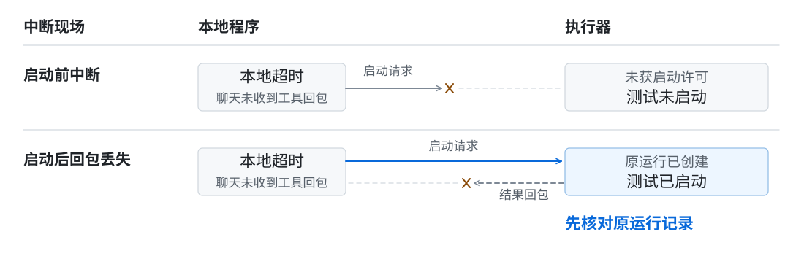

任务可能已经提交，确认丢了怎么办？
重开终端，聊天停在工具调用 call-price-17，下方没有回包。这次调用要在后台跑一趟价格回归测试。「先查原运行，再决定是否补发。」 现在换个编号提交，第一趟若已启动，就可能把同一项测试做两遍。下面的编号和断点按若存受管 Shell 的源码推演。
沿调用编号查原运行
接上同一趟测试
从 call-price-17 往下查，假定它关联到 run-r17。这个 runId 指执行器里的一趟测试。若存先找这趟运行的终态收据，核对会话、任务和启动身份。收据可信，就采用上面记下的结束结果。若测试还在跑，负责执行命令的 runner 通过核验且已认领启动，若存就接回原后台运行，继续看它的输出。两处都查不清，保留未决。 终态收据的核验与后台重连
换成远端任务接口，也先拿第一次的请求编号或幂等键查受理记录。刚创建的任务也可能暂时查不到。查明确实未创建，可以按接口约定补发。若接口保证一个幂等键只创建一次，也可以按约定用原键重提。
事后核实要留依据
/recovery 会列出未决调用和运行。假如用户从原运行的记录查到了结果，可以把依据登记回那次调用或任务。若存会标明这是用户事后核实的结论，后来接手的人还能辨认原执行器交回过哪些材料。回到普通续聊前，还要过一遍同批未决项。 查询与登记命令 · 人工结论的来源标记
试着查一次。 原调用关联 run-r17。列表里同名的任务 run-r21 刚以退出码 0 结束。run-r17 没有终态收据，控制端也连不上。现在该登记什么，接下来查谁？
核对判断
run-r17 继续记为未决。退出码 0 属于 run-r21。按 run-r17 的启动身份找它自己的终态收据或其他可信执行记录，查到以后再提交人工结论。
动手之前先留下一条记录
两次中断，聊天里少了同一行
把中断拨回启动前。若存查到还在准备阶段，启动许可和 runner 的认领记录都没有落下，就能确认原命令未执行。把中断往后挪，runner 已经启动测试，回包却没写进聊天。两次重开都少了同一条回复，后一次再发可能多跑一趟。 恢复时确认未取得启动许可

缺了回包，能直接断定原操作没做吗？文件恢复用例把断点分别放在保存意图之后、写入之前，以及写入之后、保存结果之前。前一种重开仍是旧内容，后一种重开已是新内容，用例断言两种都标为 outcome_unknown。每种情形重开三次，测试核对文件和执行日志，原操作都没有被自动补做。这两份记录一比就知道，光看聊天缺了一条回复，猜不出文件有没有被改过。 文件恢复用例及断点（项目回归测试）
把最终参数绑在这次调用上
等到结果回来才记，崩溃后就少了能从调用找到原动作的线索。若存给主代理的调用加上范围，记作 ToolRef("main", "call-price-17")，先保存最终参数的脱敏内容与摘要、授权等执行意图，再进入工具处理器。受管 Shell 在启动前把原 runId 也绑定到这条记录。意图多一次落盘等待，重开就能顺着记录查。拿同一编号换一份命令会被拒绝。若记录已有匹配的已提交结果，派发器直接把它配给原调用。 先保存意图，再登记原运行 · 识别冲突与复用结果 · 派发器返回已有结果
要是两个实例都来接同一个本地会话，若存把检查原所有者和登记新所有者放进一个事务。原实例还活着，后来者领不到。原实例已退出，新实例领取时把所有者代次加一，旧实例再来写库就会被拒绝。留在 started 的调用转为 outcome_unknown，等接管者沿原记录查证。两台机器抢一项远端任务时，也要在共享存储里把领取和改成执行中放在同一次操作里。 本地会话的所有权检查与接管
能确认拒绝，才有依据改参数
例如模型漏了必填的命令，派发前就会收到带原编号的参数错误。它可以补全参数后再交。处理器明确抛出 ToolRejected 也会回一条普通错误。已经拿到测试的非零退出码时，则去原日志定位失败。启动测试这类可能留下持久改变的调用若遇到意外异常，若存会经 UnknownToolOutcome 退出普通回合，先查动作有没有发生。 派发前的参数检查 · 两类异常处理 · 回合停在结果未知
原回执怎样回到聊天里
执行结果和会话有各自的保存时点
工具正常返回时，派发器先等执行记录写好结果，再把回包交给主循环。主循环随后保存会话检查点，也就是重开时使用的会话状态。断在两次保存之间，执行记录里已有 call-price-17 的回执，聊天还缺一条。若调用可能留下持久改变，等结果落盘时出了意外，也会停在结果未知。 先保存工具结果，再交回消息 · 主循环保存会话
假设重开检查已经通过。聊天里有同批读取报告的回包，缺 call-price-17。执行记录留着它已提交的原结果。程序怎样让两条回包各归原位？
src/ruocun/session/recovery.py · 第 55–66 行
existing: dict[str, dict[str, Any]] = {}
while index < len(messages) and messages[index].get('role') == 'tool':
item = messages[index]
existing[str(item.get('tool_call_id'))] = copy.deepcopy(item)
index += 1
for call in calls:
call_id = call['id']
record = by_id.get(call_id)
if call_id in existing:
output.append(existing[call_id])
elif record is not None and record.state == 'result_committed' and record.result is not None:
output.append(projectToolResult(record.result, call_id))上面的 while 先收好聊天里已经保存的工具回包。for call in calls 按模型当时那批调用的顺序核对。读报告那一项找到原有回包，就照原样放回。轮到 call-price-17，聊天里找不到它，执行记录里的结果已提交且可用，于是补出一条同编号的回包。这里节选的是能取到真实结果的两个分支。
这段代码要等整个会话通过恢复检查才运行。假如同批读报告的回执已提交，call-price-17 却仍未决，普通续聊会暂停。报告回执还在执行记录里，聊天暂时也少这条回复。未决调用、运行或缺失附件等问题查清后，才能按原编号把已保存的回执补齐。 打开会话时先检查，再补配对
把断点拨回进程还在的时候。CoreCoder 在执行工具时捕获 Ctrl+C，便给缺回复的调用按编号补 [interrupted]，已有回包照留。这里要解决的是下一次请求还能带着成对的消息发出去。回到本章重开终端的现场，若存先查的是 call-price-17 对应的原运行有没有可信结果。占位回复能说明聊天在那次中断处收尾了，测试有没有跑起来仍得查执行记录。 CoreCoder 的中断处理 · 会话存档
旧快照回写会丢掉新输入
后台拿着第 7 版，库里已经是第 8 版
换一起事故。测试只跑了一次，回执也齐。后台正在用第 7 版会话整理完成通知，用户先补了一句“请保留失败日志”，会话变成第 8 版。哪怕后台仍属于当前的会话所有者，整份旧快照一旦写回，新要求就丢了。
src/ruocun/session/durable_store.py · 第 1201–1204 行
current = int(_read_meta(con, "revision") or 0)
if current != expected_revision:
raise StoreError("revision 冲突，拒绝覆盖比自己更新的状态。")
revision = current + 1expected_revision 是 7，库里的 current 已是 8，提交被拒绝。后台要多从第 8 版整理一次通知，这样用户补的“请保留失败日志”就不会被旧快照盖掉。消息、新输入与后台事件的消费标记要一起保存，否则重开可能再投一次完成通知。若存等存储线程确认后才发布内存里的新进度，提交结果未明就停在这里，等核实。 会话与消费标记同事务保存 · 确认后才发布
取消时也要等已开始的工具结算
取消信号可以挡住还没派发的调用。已经开始的工具可能刚改完文件，正等存储确认。若存用 shield 让已开始的工作有机会写完回执，再把取消交回上层。后台进程是否已经停止，还得凭那趟运行的终态判断。 工具批取消后的收尾 · 查后台命令的停止结果
这一章带走什么
聊天里少了一条工具回复，先按原调用编号查那趟测试。能核实原运行仍在后台跑，就接回这一趟。若执行记录已经保存了结果，也要先查整次会话能不能接着用。比如同批还有一个调用结果不明，就先停在这里查它。恢复检查通过后，才把已存的结果按原编号补回聊天。
拿到了会话写入权，还得核对手里是哪一版会话。每次提交都查版本，后台用第 7 版整理的通知才不会盖掉用户已经写进第 8 版的新要求。
把同一项定价测试的断点挪到更早。若模型只传来半截工具参数，执行器还没接单，先按前两章的规则看调用是否已经成形、响应是否已经有产出，再决定能否重问模型。要是执行器已接下完整调用，换个编号重提就可能把同一项测试跑两遍。
回到动手前。普通顾客应看到 180 元，会员仍是 200 元。要验证这两条，计划里该写下什么？ 长任务怎样照着计划走？
面经自测
创建任务的请求超时了，服务端可能已经创建成功。你怎么确认结果、更新任务状态？
商汤 · 二面 · 面经原帖 · 题意转述
展开参考回答
我会保留第一次请求的身份，拿它查服务端的受理回执或原运行。已经创建就记回结果；确认未创建才按接口约定再试；暂时查不清，先留下原请求和待查状态。
比如提交价格回归测试后超时，按原记录找到了正在跑的测试，就接着等这一趟。改用一个新编号重新提交，可能同时跑两趟。
两台机器同时拿到一项待执行任务，怎样避免把同一件事做两遍？
展开参考回答
我会把领取任务和改成执行中放在同一次可确认的操作里，只让领到的一方执行。已有结果按原编号读取。只见到开始记录，就先查上次究竟做到哪。
程序重启后从哪恢复，怎样避免重做已经写过的工具操作？
展开参考回答
先看执行记录里有哪些结果，再看整个会话能否接着走。同一批里读报告的结果已经保存，改价格文件的结果却还没查清，重开时会暂停整个会话。原来那份读报告的回执仍在执行记录里，检查点缺的消息这时还没补。
我会按原编号核实编辑、登记判断的依据。若所有调用结果均已确认，运行和附件等也没有妨碍恢复，重开时程序会把已有回执按原编号补进聊天，不会再读一遍或改一次文件。
工具尚未写文件，程序为什么先登记一次“准备执行”？
若存设计题
展开参考回答
用户核实过原任务后补了一条说明，为什么要记下这条说明的来源？
若存设计题
展开参考回答
留下谁查过、根据什么判断。如果测试结果是用户事后核实的，恢复记录应把它和工具原先发回的回执分开。
后台刚准备好旧检查点，用户已经提交新要求，谁的进度该生效？
若存设计题
展开参考回答
批次里有工具已经开始，取消按钮按下后为什么还要等它们收尾？
若存设计题